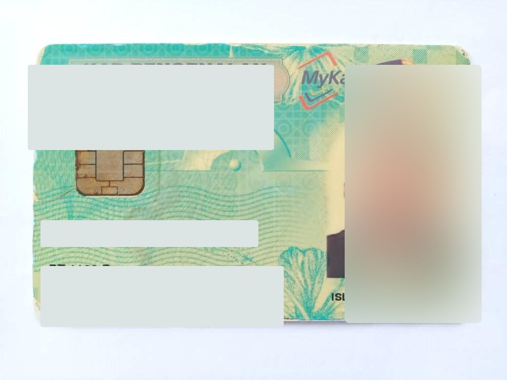
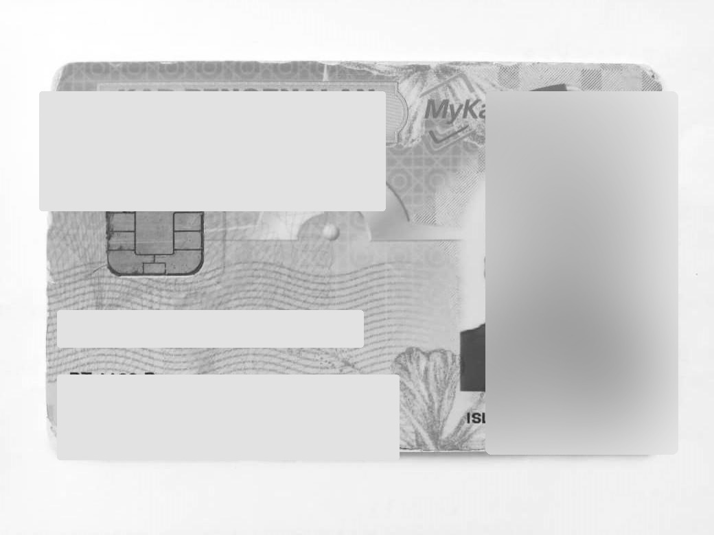
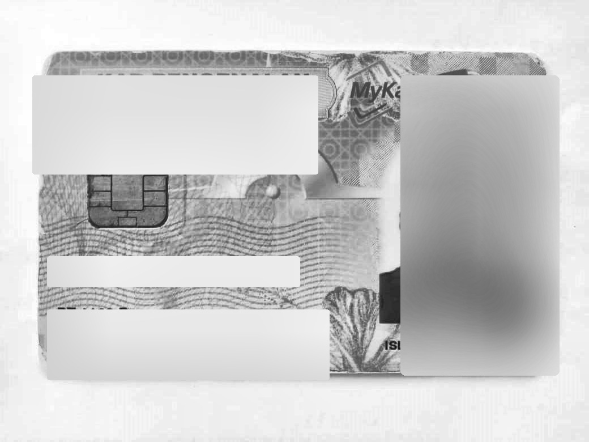

From image to identity fields
Bring names, dates of birth, and addresses into one consistent object, with recognized text available for inspection.
Explore the output ↗AI-POWERED DOCUMENT OCR
Turn names, dates of birth, and addresses into structured JSON. Explore real document samples, then run the OCR baseline on your own computer.

Built for COMPFEST 18 Data Science Academy · Research evaluated on 632 images; local app uses a separate CPU baseline.
DOCUMENT INTELLIGENCE
Explore how computer vision can turn a document image into fields that people and systems can review.
Bring names, dates of birth, and addresses into one consistent object, with recognized text available for inspection.
Explore the output ↗Assess image quality and choose raw, grayscale, or CLAHE preprocessing before the OCR model reads the document.
Follow the pipeline ↗Run the CPU baseline through a local runner. Images are sent only to the loopback API on the same device.
See the two modes ↗HOW IT WORKS
Each stage has a purpose: prepare the image, recognize the text, and organize the evidence into a result you can inspect.
Measure brightness, contrast, and sharpness to understand the input.
IMAGE QUALITYSelect a preprocessing route that suits the image conditions.
RAW · GRAY · CLAHEDetect text regions and recognize their contents with OCR.
DETECTION + RECOGNITIONExtract supported fields from text evidence and return a JSON object.
IDENTITY FIELDSADAPTIVE PREPROCESSING
Real transformations of the same redacted sample. The pipeline selects a route based on image conditions.



REAL SOURCE DOCUMENTS
Start with three photos from the source dataset. Faces and selected identity values are redacted, while the original document layout remains visible.
image_001.jpg · Redacted preview

image_150.jpg · Redacted preview

image_300.jpg · Redacted preview
Overview shows placeholder values. Run the local OCR mode to extract fields from an image you choose.
YOUR WORKSPACE, YOUR CHOICE
Start with a guided sample overview, then move to the OCR pipeline on your own computer.
Explore redacted source documents and the structure of a JSON result. No installation is needed.
Choose your own image and run the PP-OCRv6 CPU baseline through the local runner.
RESEARCH & EVALUATION
The V28 research pipeline was evaluated on 632 labeled images. These results describe the research configuration; the local app provides a separate PP-OCRv6 small CPU baseline.
Names matching the label exactly
Dates of birth matching exactly
All required fields matching together
The 83.70% overall address score includes empty address labels. For the 112 records with an address, the V27 report records 25.0% exact match.
A FEW THINGS TO KNOW
A clear view of what VeriID does and how the local experience works.
The local baseline looks for explicitly labeled names, dates of birth, and addresses, and retains recognized text with confidence values for inspection. Fields without supporting evidence remain null.
In local OCR mode, the browser sends the image to the runner on the same computer at 127.0.0.1. The public site does not receive that upload. Temporary inference files are removed after processing.
Use Windows with Python 3.10–3.12, install the local runner dependencies, and add compatible detector and recognizer weights. The model guide in the repository explains the available profiles and paths.
Read the model guide ↗The V28 research architecture uses PP-OCRv6 Medium and OpenOCR SVTRv2 Server. Their complete research engine and weights are not included in the public repository. The runnable local app uses PP-OCRv6 small as a CPU baseline and has separate performance characteristics.
EXPLORE VERIID
See the samples. Inspect the output. Explore local OCR.